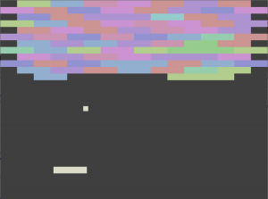
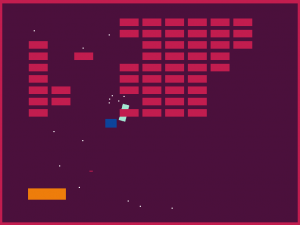

I co-wrote a book called The Lifespan of a Fact, which was published in 2012 by Norton. The blurb is:
How negotiable is a fact in nonfiction? In 2003, an essay by John D’Agata was rejected by the magazine that commissioned it due to factual inaccuracies. That essay—which eventually became the foundation of D’Agata’s critically acclaimed About a Mountain—was accepted by another magazine, The Believer, but not before they handed it to their own fact-checker, Jim Fingal. What resulted from that assignment was seven years of arguments, negotiations, and revisions as D’Agata and Fingal struggled to navigate the boundaries of literary nonfiction.
You can buy it at your local bookseller, or online at
Bookshop.org.
German Edition
It was published in Germany by Hanser, as Das kurze Leben der Fakten.
Find a German-language review in Das Spiegal here.

French Edition
It was published in France Vies Parallèles, as Que Faire De Ce Corps Qui Tombe.
Find a French-language review in Libération here.

Praise
“A fascinating and dramatic power struggle over the intriguing question of what nonfiction should, or can, be.” — Lydia Davis
“...[H]ere is the genius of this little book, for as it progresses, D'Agata and Fingal turn everything around on us, until even our most basic assumptions are left unclear. Who says writers owe readers anything? Or that genre, such as it is, is a valid lens through which to consider literary work? ...[T]he book is "an enactment of the experience of trying to find meaning"— a vivid and reflective meditation on the nature of nonfiction as literary art.” — David L. Ulin, L.A. Times
“Very à propos in our era of spruced-up autobiography and fabricated reporting, this is a whip-smart, mordantly funny, thought-provoking rumination on journalistic responsibility and literary license.” — Publishers Weekly
“A singularly important meditation on fact and fiction, the imagination and life, fidelity and freedom. Provocative, maddening, and compulsively readable, The Lifespan of a Fact pulses through a forest of detail to illuminate high-stakes, age-old questions about art and ethics—questions to which the book (blessedly!) provides no easy answers.” — Maggie Nelson
“...The Lifespan of a Fact... is less a book than a knock-down, drag-out fight between two tenacious combatants, over questions of truth, belief, history, myth, memory and forgetting.” — Jennifer McDonald, New York Times Book Review
“A riveting essay delving into the arcane yet entertaining debate within the writing community over the relationship between truth and accuracy when writing creative nonfiction....” — Kirkus Reviews
“...Thus begins the alternately absorbing and infuriating exercise that is the book The Lifespan of a Fact, a Talmudically arranged account of the conflict between Jim Fingal, zealous checker, and John D’Agata, nonfiction fabulist, which began in 2005 and resulted in this collaboration.” — Gideon Lewis-Kraus, New York Times Magazine
“If you like compelling, emotional stories set in wild, business-friendly locales, this book delivers.” — Daniel Roberts, Fortune Magazine
Interviews
These are interviews that I have participated in discussing The Lifespan of a Fact.
Sound of Pursuit Podcast.
9/17/2014, with Adam Ragusea and Anthony Brooks
Radio Boston.
3/13/2012, with Adam Ragusea and Anthony Brooks
The Kathleen Dunn Show.
3/13/2012, with Kathleen Dunn
Morning Edition.
3/8/2012, with Travis Larchuk
The Colin McEnroe Show.
3/7/2012, with Colin McEnroe
Radio Berkman.
3/6/2012, with Dan Jones
On the Media.
2/24/2012, with Brooke Gladstone

To the Best of Our Knowledge. 2/12/2012, with Anne Strainchamps
Selected works.
52 Bots

Originally this was a project to create a twitter bot each week, then it just turned into making a bunch of bots. Done primarily in Python, with all source online. My favorite one so far, @HwaetBot, uses a Markov model to auto-generate Old English riddles, trained using the Exeter Book as source material.
The full listing of the bots can be found on our Tumblr page.
Skynetheremin

The Skynetheremin is a distributed theremin that is powered by a Leap Motion controller, a user-interface device that tracks the user's hand motions. It was written in javascript using node.js, web audio, and a whole lotta libraries.
To view the app, using Chrome (or maybe Firefox, anything else at your own risk) go to: http://skynetheremin.herokuapp.com/.
Click and drag on the screen to make your own music.
Source code.
Echobreakout

For Music Hack Day Boston 2012, Brian Fife and I made Echobreakout, a brickbreaker clone built in LÖVE, using Echonest APIs to chop up a song into fragments, which are rendered as a game state of dynamically colored bricks that play the source sound clip when hit.
A version of Echobreakout compiled for Love 0.9.x can be found here. (Requires a download of Love2d to run, but will run on any platform that supports it.)
Songs in that version are:
"Anne Lisa goes to bed" by Ballpen. (Ballpen) / CC BY-NC-ND 3.0.
"You Kill My Brother - GoGoGo" and "Crazy Games - Wake Up" from Micro Invasion - East Jakarta Chiptunes Compilation (Indonesian Chiptunes) / CC BY-NC-SA 3.0.
If you're looking to the FMA for CC music there is a search filter "By Use."
Juicy Breakout in LÖVE

I previously played around with the Love2d game engine as part of a Music Hack Day project with a friend. I did this project as a way to teach myself more about game development, so that I could try my hand at a few indie game projects to see whether or not it was something I was interested in seriously pursuing. (It wasn't.)
I'm not sure how I came across it, but Martin Jonasson & Petri Purho's "Juice It Or Lose It" video was pretty eye-opening for me in terms of how small aesthetic design choices can greatly influence how fun a game seems. After watching that, I wanted to see what it would be like to implement some of those "juicy" features into EchoBreakout.
A good deal of coding, and three or four rounds of full refactoring later, I came up with an implementation that I'm moderately happy with. It can be found on github here. I'm about ready to move on to playing with other frameworks, so figured I'd do a bit of a post-mortem here.
Post-Mortem Time!
Specific Juicy Features
- Splash Screen that bounces in
- Bricks and Paddle that drop in, with jitter and elastic shape/rotation scaling
- Bricks that flash colors, and rotate/scale-down/get launched off into background in the direction the ball hits them
- Ball that has elastic shape scaling, color-change, and rotation on collisions
- Paddle and Walls that elastically bounce when hit by ball
- Background that flashes colors on certain ball collision events
- Confetti particles that eject from ball upon collisions
- Flashing "You Win" text when all bricks are destroyed
Support code to get us there:
- A backend Entity-Component system for managing entities, along with basic CNF-query class for retrieving entities with particular components
- Basic movement, input, collision, time, state, statistics-tracking, and rendering components / systems
- Behavior system for adding special frame-by-frame logic to entities
- Message system for announcing events and allowing entities to register their own response to events
- Emitter component / system (used stupidly for particles here, but generic for any kind of entity)
- Camera system (doesn't get much advanced use here)
- Tweening and Scheduling systems
- Lua ports of a few basic Java-like collections classes
- Implementation of a Pool util class
Over the course of development, I refactored the codebase I was working on a few times to continually clean things up. Eventually I settled on creating a basic Entity-Component framework inspired by Artemis and posts by Adam Martin. Just about everything in the game is an Entity; every data attribute is packaged in a Component; and everything that happens to update or react to those Components happens in a System. For a basic overview of the theory behind this, check out this post.
When coming up with my own scheduler / tween systems, I was heavily influenced by code in Matthias Richter's HUMP libraries. Other specific code I directly used can be found on the github page.
What I learned; Thoughts on the code / development process
- I had a lot of fun playing with Lua -- it's a nice little scripting prototype-based language with an interesting table-centric paradigm of doing things. I did a lot of things with functions and what elsewhere would be called function-pointers/delegates that I've never done before, and it was super easy/intuitive to do so. Metatables are pretty cool and are a fun way to think about how to control objects. That all said, I don't know that I would use it for any sort of serious non-embedded / non-game-related development, since the built-in libraries are not very expansive, and you sort of have to force objects onto it / gamble on someone's implementation of an object class -- I'd generally stick to Python for things I might consider doing with Lua. The lack of easy IDE-integration made refactoring and changing things tough -- though there are things like ZeroBrane and LuaEclipse, the tools they offer are way behind the sorts of things you can do in Eclipse with Java and Python.
- Implementing and working with the Entity-Component system made me retroactively understand my forays into Unity3D much better.
- Being used to using powerful Java and Python libraries, I ended up implementing Set, List, Pool, Tally, and Multimap classes in lua, which was a good exercise.
- Throughout most of the development the FPS was solidly at 60, but towards the end it started going way down. There are some basic things that this just seems to be slow with -- for example, trying to implement a simple history class that took a snapshot of the ball's position every 5-10 frames for the purpose of drawing a ball-trail ended up reducing my FPS by ~10. I'm not sure how much of this is me doing things inefficiently vs. limitations of Love2d, but in the back of my head it feels like if Starcraft 2 exists, I should be able to track this small amount of data without slowing things down that much. (I also don't think Chrome should use a GB of RAM to have a reasonable amount of tabs open, so that shows you what I know.)
- I'm not super happy with my Rendering classes. I didn't want my shapes to themselves have Transforms, so they are rendered with an offset from an entity's Transform component; the downside to this is the shape code itself and the collision code dealing with them is much less legible than my original stab at it.
- If I was doing a game for real with this, I would invest more time in the tests / test framework.
- While Love2d is great for rapid prototyping and very easily building / seeing the results of your code changes, the current lack of easy built-in web-integration probably means I won't be spending much more time with it -- if I was doing game I wanted to release "for real" I'd likely want to use a more powerful C-based language, and if I was doing a hack day project I'd want to do something that could export to HTML5 so people don't have to download an executable to try out the game. (This was annoying when we were trying to publish EchoBreakout.)
Various Experiments in LÖVE
Screenshots of a few experiments in Love2d. Code for these can be found at my Github account.
Automata

Minimalist "Game of Life" implementation with some pretty colors.
Bullettest

Test game for shotting bullets, placing them in a quadtree, and testing an (invincible) opponent with AI steering behaviors.
Quadtreetest

Code to visually test my implementation of quadtrees.
Soundtest

Test implementation of real-time audio synthesis. Press up or down to change wave types, and press "w" or "s" to change note.
Soundtiles

An audio toy that uses real-time audio synthesis and a looping window to create and play simple set of notes/chords. Click on a square to set a note. Press up or down to change wave types.
Tile Test

Test implementation of mapping the screen into tiles.
Warpinggrid

A 3d warping grid projected onto a 2d plane, a la Geometry Wars.
Press enter or space to warp the grid.
Concepts drawn from Game tutorials and ported to lua.
Water

Moderately dissatisfactory experiment in using springs to simulate water effects. Based on
http://gamedev.tutsplus.com/tutorials/implementation/make-a-splash-with-2d-water-effects/
{kind=link}